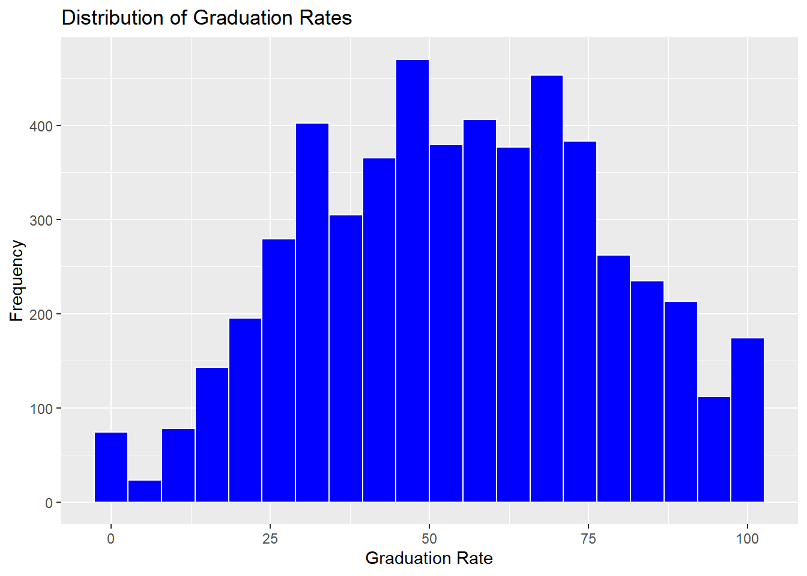
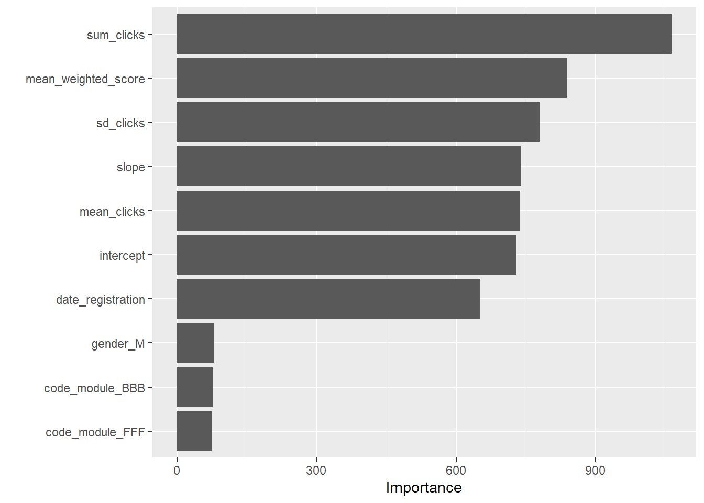

# Install and load the OECD package
install.packages("OECD")
library(OECD)
# Fetch PISA data for the 2018 cycle
pisa_data <- getOECD("pisa", years = "2022")
# Display a summary of the data
summary(pisa_data)Numeric Data
Abstract: This section reviews how to access data that is primarily numeric/quantitative in nature, but from a different source and of a different nature than the data typically used by social scientists. Example data sets include international or national large-scale assessments (e.g., PISA, NAEP，IPEDS) and data from digital technologies (e.g., log-trace data from Open University Learning Analytics Dataset (OULAD)).
4.1 Overview
In social science research, data is traditionally sourced from small-scale surveys, experiments, or qualitative studies. However, the rise of big data offers researchers opportunities to explore numeric and quantitative datasets of unprecedented scale and variety. This chapter discusses how to access and analyze large-scale datasets like international assessments (e.g., PISA, NAEP) and digital log-trace data (e.g., Open University Learning Analytics Dataset (OULAD)). These secondary data sources enable novel research questions and methods, particularly when paired with machine learning and statistical modeling approaches.
4.2 Accessing Big data (Broadening the Horizon)
4.2.1 Big Data
Accessing PISA Data
The Programme for International Student Assessment (PISA) is a widely used dataset for large-scale educational research. It assesses 15-year-old students’ knowledge and skills in reading, mathematics, and science across multiple countries. Researchers can access PISA data through various methods:
1. Direct Download from the Official Website
The OECD provides direct access to PISA data files via its official website. Researchers can download data for specific years and cycles. Data files are typically provided in .csv or .sav (SPSS) formats, along with detailed documentation.
- Steps to Access PISA Data from the OECD Website:
- Visit the OECD PISA website.
- Navigate to the “Data” section.
- Select the desired assessment year (e.g., 2022).
- Download the data and accompanying codebooks.
2. Using the OECD R Package
The OECD R package provides a direct interface to download and explore datasets published by the OECD, including PISA.
- Steps to Use the
OECDPackage:- Install and load the
OECDpackage. - Use the
getOECD()function to fetch PISA data.
- Install and load the
3. Using the Edsurvey R Package
The Edsurvey package is designed specifically for analyzing large-scale assessment data, including PISA. It allows for complex statistical modeling and supports handling weights and replicate weights used in PISA.
- Steps to Use the
EdsurveyPackage:- Install and load the
Edsurveypackage. - Download the PISA data from the OECD website and provide the path to the
.savfiles. - Load the data into R using
readPISA().
- Install and load the
# Install and load the Edsurvey package
install.packages("Edsurvey")
library(Edsurvey)
# Read PISA data from a local file
pisa_data <- readPISA("path/to/PISA2022Student.sav")
# Display the structure of the dataset
str(pisa_data)Comparison of Methods
| Method | Advantages | Disadvantages |
|---|---|---|
| Direct Download | Full access to all raw data and documentation. | Requires manual processing and cleaning. |
OECD Package |
Easy to use for downloading specific datasets. | Limited to OECD-published formats. |
Edsurvey Package |
Supports advanced statistical analysis and weights. | Requires additional setup and dependencies. |
Accessing IPEDS Data
The Integrated Postsecondary Education Data System (IPEDS) is a comprehensive source of data on U.S. colleges, universities, and technical and vocational institutions. It provides data on enrollments, completions, graduation rates, faculty, finances, and more. Researchers and policymakers widely use IPEDS data to analyze trends in higher education.
There are several ways to access IPEDS data, depending on the user’s needs and technical proficiency.
1. Direct Download from the NCES Website
The most straightforward way to access IPEDS data is by downloading it directly from the National Center for Education Statistics (NCES) website.
Steps to Access IPEDS Data:
- Visit the IPEDS Data Center.
- Click on “Use the Data” and navigate to the “Download IPEDS Data Files” section.
- Select the desired data year and survey component (e.g., Fall Enrollment, Graduation Rates).
- Download the data files, typically provided in
.csvor.xlsformat, along with accompanying codebooks.
2. Using the ipeds R Package
The ipeds R package simplifies downloading and analyzing IPEDS data directly from R by connecting to the NCES data repository.
Steps to Use the ipeds Package:
- Install and load the
ipedspackage. - Use the
download_ipeds()function to fetch data for specific survey components and years.
# Install and load the ipeds package
install.packages("ipeds")
library(ipeds)
# Download IPEDS data for completions in 2021
ipeds_data <- download_ipeds("C", year = 2021)
# View the structure of the downloaded data
str(ipeds_data)3. Using the tidycensus R Package
The tidycensus package, while primarily designed for Census data, can access specific IPEDS data linked to educational institutions.
Steps to Use the tidycensus Package:
- Install and load the
tidycensuspackage. - Set up a Census API key to access the data.
- Query IPEDS data for specific institution-level information.
# Install and load the tidycensus package
install.packages("tidycensus")
library(tidycensus)
# Set Census API key (replace with your actual key)
census_api_key("your_census_api_key")
# Fetch IPEDS-related data (e.g., institution information)
ipeds_institutions <- get_acs(
geography = "place",
variables = "B14002_003",
year = 2021,
survey = "acs5"
)
# View the first few rows
head(ipeds_institutions)4. Using Online Tools
IPEDS provides several online tools for querying and visualizing data without requiring programming skills.
Common Tools:
- IPEDS Data Explorer: Enables users to query and export customized datasets.
- Trend Generator: Allows users to visualize trends in key metrics over time.
- IPEDS Use the Data: Simplified tool for accessing pre-compiled datasets.
Steps to Use the IPEDS Data Explorer:
- Visit the IPEDS Data Explorer.
- Select variables of interest, such as institution type, enrollment size, or location.
- Filter results by years, institution categories, or other criteria.
- Export the results as a
.csvor.xlsxfile.
Comparison of Methods
| Method | Advantages | Disadvantages |
|---|---|---|
| Direct Download | Full access to raw data and documentation. | Requires manual data preparation and cleaning. |
ipeds Package |
Automated access to specific components. | Limited flexibility for customized queries. |
tidycensus Package |
Allows integration with Census and ACS data. | Requires API setup and advanced R skills. |
| Online Tools | User-friendly and suitable for non-coders. | Limited to predefined queries and exports. |
Accessing Open University Learning Analytics Dataset (OULAD)
The Open University Learning Analytics Dataset (OULAD) is a publicly available dataset designed to support research in educational data mining and learning analytics. It includes student demographics, module information, interactions with the virtual learning environment (VLE), and assessment scores.
Steps to Access OULAD Data
Visit the OULAD Repository**
The dataset is hosted on the Open University’s Analytics Project. To access the data: 1. Navigate to the website. 2. Download the dataset as a .zip file. 3. Extract the .zip file to a local directory.
The dataset contains multiple CSV files: - studentInfo.csv: Student demographics and performance data. - studentVle.csv: Interactions with the VLE. - vle.csv: Details of learning resources. - studentAssessment.csv: Assessment scores.
Loading OULAD Data in R
Once the data is downloaded and extracted, follow these steps to load and access it in R:
Step 1: Install Required Packages
# Install necessary packages
install.packages(c("readr", "dplyr"))Step 2: Load Data
Use the readr package to read the CSV files into R.
# Load required libraries
library(readr)
# Define the path to the OULAD data
data_path <- "path/to/OULAD/"
# Load individual CSV files
student_info <- read_csv(file.path(data_path, "studentInfo.csv"))
student_vle <- read_csv(file.path(data_path, "studentVle.csv"))
vle <- read_csv(file.path(data_path, "vle.csv"))
student_assessment <- read_csv(file.path(data_path, "studentAssessment.csv"))Step 3: Preview the Data
Inspect the structure and contents of the datasets.
# View the first few rows of student info
head(student_info)
# Check the structure of the student VLE data
str(student_vle)4.2.2 Learning Analytics
What is Learning Analytics?
Learning Analytics (LA) refers to the measurement, collection, analysis, and reporting of data about learners and their contexts. The primary goal of LA is to understand and improve learning processes by identifying patterns, predicting outcomes, and providing actionable insights to educators, institutions, and learners.
Key features of LA include: - Data Collection: Gathering information from digital platforms such as learning management systems (LMS) or external assessments. - Analysis: Using machine learning, statistical methods, or visualization tools to reveal trends and patterns. - Applications: Supporting personalized learning, enhancing institutional decision-making, and improving curriculum design.
Applications of Learning Analytics in Big Data
Learning analytics can be applied to large-scale educational datasets like PISA, IPEDS, and OULAD to uncover trends, predict outcomes, and guide interventions.
1. PISA Data and Learning Analytics
- What it offers: Insights into international student performance in reading, math, and science, combined with contextual variables (e.g., socio-economic status).
- LA Applications:
- Identifying key factors influencing performance across countries.
- Predicting the impact of ICT use on student achievement.
- Segmenting students into performance clusters for targeted interventions.
2. IPEDS Data and Learning Analytics
- What it offers: U.S. institutional-level data on enrollment, graduation rates, tuition, and financial aid.
- LA Applications:
- Analyzing trends in student demographics across institutions.
- Predicting enrollment patterns based on historical data.
- Benchmarking institutions to inform policymaking and funding decisions.
3. OULAD and Learning Analytics
- What it offers: Rich data on student engagement with virtual learning environments (VLE), assessment scores, and demographic information.
- LA Applications:
- Tracking student interactions with learning resources to predict course completion.
- Modeling the relationship between VLE usage and final grades.
- Detecting early warning signs for at-risk students based on engagement metrics.
Why Learning Analytics Matters
The integration of Learning Analytics with big data enables researchers and practitioners to: - Personalize Learning: Tailor educational experiences to meet individual needs. - Improve Retention: Identify at-risk learners and implement timely interventions. - Enhance Decision-Making: Provide evidence-based recommendations for curriculum and policy adjustments.
By leveraging datasets like PISA, IPEDS, and OULAD, learning analytics can help bridge the gap between raw data and actionable insights, fostering a more equitable and effective educational landscape.
Supervised Learning in Learning Analytics
Machine Learning, particularly Supervised Learning, has become a cornerstone of Learning Analytics. Supervised learning models are trained on labeled datasets, where input features are mapped to known outcomes, enabling the prediction of new, unseen data.
Key Concepts in Supervised Learning
Definition
Supervised Learning is a subset of Machine Learning focused on learning a mapping between input variables (features) and output variables (labels or outcomes). Models trained on labeled data can predict outcomes for new data points.Common Algorithms
- Linear Regression
- Logistic Regression
- Decision Trees and Random Forests
- Neural Networks
Applications in Education
Supervised learning is particularly effective in Learning Analytics for predicting:- Student performance
- Dropout risks
- Enrollment trends
- Course completion rates
Applications of Supervised Learning with Big Data
1. PISA Data and Supervised Learning
- Goal: Use demographic and contextual features to predict student performance in mathematics, reading, or science.
- Example: Train a linear regression model to identify the relationship between socioeconomic status and test scores.
2. IPEDS Data and Supervised Learning
- Goal: Develop models to predict institutional enrollment rates based on financial aid, demographics, and program offerings.
- Example: Use logistic regression to forecast whether a student is likely to enroll based on financial aid eligibility.
3. OULAD Data and Supervised Learning
- Goal: Predict student outcomes (e.g., pass/fail) based on engagement metrics like forum participation and assignment submissions.
- Example: Train a random forest model to classify students as “at-risk” or “not at-risk” based on weekly interaction data.
Choosing the Right Supervised Learning Approach
When applying supervised learning in Learning Analytics: 1. Define the Goal: Clearly articulate the outcome you want to predict (e.g., performance, enrollment, or engagement). 2. Select an Algorithm: Choose an appropriate model based on the data and prediction task. - For continuous outcomes, use regression models. - For categorical outcomes, use classification models like logistic regression or random forests. 3. Feature Engineering: Select and preprocess relevant features (e.g., attendance, demographics, assignment scores) to improve model accuracy. 4. Evaluate Model Performance: Use metrics such as accuracy, precision, recall, or R-squared to assess model effectiveness.
Integrating supervised learning techniques into Learning Analytics, researchers and practitioners can leverage big data to make data-driven predictions and decisions, ultimately enhancing educational outcomes.
4.3 Logistic Regression ML
4.3.1 Purpose + CASE
Purpose
Logistic regression is a supervised learning technique widely used for binary classification tasks. It models the probability of an event occurring (e.g., success vs. failure) based on a set of predictor variables. Logistic regression is particularly effective in educational research for predicting outcomes such as retention, enrollment, or graduation rates.
CASE: Predicting Graduation Rates
This case study is based on IPEDS data and inspired by Zong and Davis (2022). We predict graduation rates as a binary outcome (good_grad_rate) using institutional features such as total enrollment, admission rate, tuition fees, and average instructional staff salary.
4.3.2 Sample Research Questions (RQs)
- RQ A: What institutional factors are associated with high graduation rates in U.S. four-year universities?
- RQ B: How accurately can we predict high graduation rates using institutional features with supervised machine learning?
4.3.3 Analysis
Loading Required Packages
We load necessary R packages for data wrangling, cleaning, and modeling.
# Load necessary libraries for data cleaning, wrangling, and modeling
library(tidyverse) # For data manipulation and visualization
library(tidymodels) # For machine learning workflows
library(janitor) # For cleaning variable namesLoading and Cleaning Data
We read the IPEDS dataset and clean column names for easier handling.
# Read in IPEDS data from CSV file
ipeds <- read_csv("data/ipeds-all-title-9-2022-data.csv")
# Clean column names for consistency and usability
ipeds <- janitor::clean_names(ipeds)Data Wrangling
Select relevant variables, filter the dataset, and create the dependent variable good_grad_rate.
# Select and rename key variables; filter relevant institutions
ipeds <- ipeds %>%
select(
name = institution_name, # Institution name
total_enroll = drvef2022_total_enrollment, # Total enrollment
pct_admitted = drvadm2022_percent_admitted_total, # Admission percentage
tuition_fees = drvic2022_tuition_and_fees_2021_22, # Tuition fees
grad_rate = drvgr2022_graduation_rate_total_cohort, # Graduation rate
percent_fin_aid = sfa2122_percent_of_full_time_first_time_undergraduates_awarded_any_financial_aid, # Financial aid
avg_salary = drvhr2022_average_salary_equated_to_9_months_of_full_time_instructional_staff_all_ranks # Staff salary
) %>%
filter(!is.na(grad_rate)) %>% # Remove rows with missing graduation rates
mutate(
# Create binary dependent variable for high graduation rates
good_grad_rate = if_else(grad_rate > 62, 1, 0),
good_grad_rate = as.factor(good_grad_rate) # Convert to factor
)Exploratory Data Analysis (EDA)
Visualize the distribution of the graduation rate.
# Plot a histogram of graduation rates
ipeds %>%
ggplot(aes(x = grad_rate)) +
geom_histogram(bins = 20, fill = "blue", color = "white") +
labs(
title = "Distribution of Graduation Rates",
x = "Graduation Rate",
y = "Frequency"
)
Logistic Regression Model
Fit a logistic regression model to predict high graduation rates.
# Fit logistic regression model
m1 <- glm(
good_grad_rate ~ total_enroll + pct_admitted + tuition_fees + percent_fin_aid + avg_salary,
data = ipeds,
family = "binomial" # Specify logistic regression for binary outcome
)
# View model summary
summary(m1)
Call:
glm(formula = good_grad_rate ~ total_enroll + pct_admitted +
tuition_fees + percent_fin_aid + avg_salary, family = "binomial",
data = ipeds)
Coefficients:
Estimate Std. Error z value Pr(>|z|)
(Intercept) -8.742e-01 6.237e-01 -1.402 0.161
total_enroll 3.350e-05 7.880e-06 4.251 2.13e-05 ***
pct_admitted -1.407e-02 3.519e-03 -3.997 6.40e-05 ***
tuition_fees 6.952e-05 4.965e-06 14.003 < 2e-16 ***
percent_fin_aid -2.960e-02 5.652e-03 -5.237 1.64e-07 ***
avg_salary 2.996e-05 3.870e-06 7.740 9.91e-15 ***
---
Signif. codes: 0 '***' 0.001 '**' 0.01 '*' 0.05 '.' 0.1 ' ' 1
(Dispersion parameter for binomial family taken to be 1)
Null deviance: 2277 on 1706 degrees of freedom
Residual deviance: 1632 on 1701 degrees of freedom
(3621 observations deleted due to missingness)
AIC: 1644
Number of Fisher Scoring iterations: 5Supervised ML Workflow
Use the tidymodels framework to build a machine learning model.
# Define recipe for the model (preprocessing steps)
my_rec <- recipe(good_grad_rate ~ total_enroll + pct_admitted + tuition_fees + percent_fin_aid + avg_salary, data = ipeds)
# Specify logistic regression model with tidymodels
my_mod <- logistic_reg() %>%
set_engine("glm") %>% # Use glm engine for logistic regression
set_mode("classification") # Specify binary classification task
# Create workflow to connect recipe and model
my_wf <- workflow() %>%
add_recipe(my_rec) %>%
add_model(my_mod)
# Fit the logistic regression model
fit_model <- fit(my_wf, ipeds)
# Generate predictions on the dataset
predictions <- predict(fit_model, ipeds) %>%
bind_cols(ipeds) # Combine predictions with original data
# Calculate and display accuracy
my_accuracy <- predictions %>%
metrics(truth = good_grad_rate, estimate = .pred_class) %>%
filter(.metric == "accuracy")
my_accuracy# A tibble: 1 × 3
.metric .estimator .estimate
<chr> <chr> <dbl>
1 accuracy binary 0.8004.3.4 Results and Discussions
Logistic Regression Model (RQ A)
The logistic regression model was fitted to predict whether a university achieves a “good” graduation rate (i.e., graduation rate > 62%) based on several institutional features. The model output is summarized below:
- Coefficients & Significance:
- total_enroll: Estimate = 3.35e-05, z = 4.251, p = 2.13e-05
Interpretation: As total enrollment increases, the probability of a high graduation rate increases. - pct_admitted: Estimate = -1.407e-02, z = -3.997, p = 6.40e-05
Interpretation: Higher admission percentages are associated with a lower likelihood of achieving a high graduation rate. - tuition_fees: Estimate = 6.952e-05, z = 14.003, p < 2e-16
Interpretation: Higher tuition fees are strongly associated with higher graduation rates. - percent_fin_aid: Estimate = -2.960e-02, z = -5.237, p = 1.64e-07
Interpretation: A higher percentage of students receiving financial aid is associated with a lower probability of a good graduation rate. - avg_salary: Estimate = 2.996e-05, z = 7.740, p = 9.91e-15
Interpretation: Higher average salaries for instructional staff are positively associated with high graduation rates.
- total_enroll: Estimate = 3.35e-05, z = 4.251, p = 2.13e-05
- Model Fit Statistics:
- Null Deviance: 2277 (on 1706 degrees of freedom)
- Residual Deviance: 1632 (on 1701 degrees of freedom)
- AIC: 1644
- Note: 3621 observations were deleted due to missing values.
Overall, the regression model demonstrates that several institutional factors are statistically significant predictors of graduation rates. In particular, tuition fees and avg_salary have a strong positive effect, while pct_admitted and percent_fin_aid show negative associations.
Supervised ML Workflow Results (RQ B)
Using the tidymodels framework, we built a logistic regression model as part of a supervised machine learning workflow. The performance metric obtained is as follows:
- Accuracy: 80.02%
This indicates that the machine learning model correctly classified approximately 80% of the institutions as having either a good or not good graduation rate, based on the selected predictors.
Overall Discussion
- Similarities between Approaches:
- Both the traditional logistic regression and the tidymodels workflow identified key predictors that influence graduation rates, such as total enrollment, admission percentage, tuition fees, financial aid percentage, and average staff salary.
- Each approach provides valuable insights: the regression model offers detailed coefficient estimates and significance levels, while the tidymodels workflow emphasizes predictive accuracy.
- Differences between Approaches:
- Interpretability vs. Predictive Performance: The logistic regression output delivers interpretability through its coefficients and p-values, allowing us to understand the direction and magnitude of the relationships. In contrast, the supervised ML workflow focuses on achieving a robust predictive performance, evidenced by an 80% accuracy.
- Handling of Data: The traditional regression model summarizes the relationship between variables, whereas the ML workflow integrates data pre-processing, modeling, and validation into a cohesive framework.
In summary, our analyses indicate that institutional factors, particularly tuition fees and staff salaries, play a significant role in predicting graduation outcomes. The supervised ML approach, with an accuracy of around 80%, confirms the model’s practical utility in classifying institutions based on graduation performance. Both methods complement each other, providing a comprehensive understanding of the underlying dynamics that drive graduation rates in higher education.
4.4 Random Forests ML on Interactions Data
In this section, we explore a more sophisticated supervised learning approach—Random Forests—to model student interactions data from the Open University Learning Analytics Dataset (OULAD). Building on our earlier work with logistic regression and evaluation metrics, this case study examines whether a random forest model can improve predictive performance when leveraging clickstream data from the virtual learning environment (VLE).
4.4.1 Purpose + CASE
Purpose
Random Forests is an ensemble learning method that builds multiple decision trees and aggregates their results to improve prediction accuracy and control over-fitting. It is particularly well suited for complex, high-dimensional data such as student interaction (clickstream) data. This approach not only provides robust predictions but also offers insights into variable importance, helping us understand which features most influence student outcomes.
CASE
Inspired by research on digital trace data (e.g., Rodriguez et al., 2021; Bosch, 2021), this case study uses pre-processed interactions data from OULAD. In our analysis, we focus on predicting whether a student will pass the course (a binary outcome) based on engineered features derived from clickstream data. These features include the total number of clicks (sum_clicks), summary statistics (mean and standard deviation of clicks), and linear trends over time (slope and intercept from clickstream patterns).
4.4.2 Sample Research Questions
- RQ1: How accurately can a random forest model predict whether a student will pass a course using interactions data from OULAD?
- RQ2: Which interaction-based features (e.g., total clicks, click stream slope) are most important in predicting student outcomes?
- RQ3: How does the use of cross-validation (e.g., v-fold CV) influence the stability and generalizability of the random forest model on interactions data?
4.4.3 Analysis
Loading Required Packages
# Load necessary libraries for data manipulation and modeling
library(tidyverse) # Data wrangling and visualization
library(janitor) # Cleaning variable names
library(tidymodels) # Modeling workflow
library(ranger) # Random forest implementation
library(vip) # Variable importance plotsLoading and Preparing the Data
We load the pre-filtered interactions data from OULAD along with a students-and-assessments file, then join them to create a complete dataset for modeling.
# Load the interactions data (filtered for the first one-third of the semester)
interactions <- read_csv("data/oulad-interactions-filtered.csv")
# Load the students and assessments data
students_and_assessments <- read_csv("data/oulad-students-and-assessments.csv")
# Create cut-off dates based on assessments data (using first quantile as intervention point)
assessments <- read_csv("data/oulad-assessments.csv")
# Create cut-off dates based on assessments data using the correct date column 'date_submitted'
code_module_dates <- assessments %>%
group_by(code_module, code_presentation) %>%
summarize(quantile_cutoff_date = quantile(date_submitted, probs = 0.25, na.rm = TRUE), .groups = 'drop')
# Join interactions with the cutoff dates and filter
interactions_joined <- interactions %>%
left_join(code_module_dates, by = c("code_module", "code_presentation"))
interactions_joined <- interactions_joined %>%
select(-quantile_cutoff_date.x) %>%
rename(quantile_cutoff_date = quantile_cutoff_date.y)
# Filter interactions to include only those before the cutoff date
interactions_filtered <- interactions_joined %>%
filter(date < quantile_cutoff_date)
# Summarize interactions: total clicks, mean and standard deviation
interactions_summarized <- interactions_filtered %>%
group_by(id_student, code_module, code_presentation) %>%
summarize(
sum_clicks = sum(sum_click),
sd_clicks = sd(sum_click),
mean_clicks = mean(sum_click)
)
# (Optional) Further feature engineering: derive linear slopes from clickstream
fit_model <- function(data) {
tryCatch(
{
model <- lm(sum_click ~ date, data = data)
tidy(model)
},
error = function(e) { tibble(term = NA, estimate = NA, std.error = NA, statistic = NA, p.value = NA) },
warning = function(w) { tibble(term = NA, estimate = NA, std.error = NA, statistic = NA, p.value = NA) }
)
}
interactions_slopes <- interactions_filtered %>%
group_by(id_student, code_module, code_presentation) %>%
nest() %>%
mutate(model = map(data, fit_model)) %>%
unnest(model) %>%
ungroup() %>%
select(code_module, code_presentation, id_student, term, estimate) %>%
filter(!is.na(term)) %>%
pivot_wider(names_from = term, values_from = estimate) %>%
mutate_if(is.numeric, round, 4) %>%
rename(intercept = `(Intercept)`, slope = date)
# Join summarized clicks and slopes features
interactions_features <- left_join(interactions_summarized, interactions_slopes, by = c("id_student", "code_module", "code_presentation"))
# Finally, join with students_and_assessments to get the outcome variable
students_assessments_and_interactions <- left_join(students_and_assessments, interactions_features, by = c("id_student", "code_module", "code_presentation"))
# Ensure outcome variable 'pass' is a factor
students_assessments_and_interactions <- students_assessments_and_interactions %>%
mutate(pass = as.factor(pass))
# Optional: Inspect the final dataset
students_assessments_and_interactions %>%
skimr::skim()| Name | Piped data |
| Number of rows | 32593 |
| Number of columns | 22 |
| _______________________ | |
| Column type frequency: | |
| character | 8 |
| factor | 1 |
| numeric | 13 |
| ________________________ | |
| Group variables | None |
Variable type: character
| skim_variable | n_missing | complete_rate | min | max | empty | n_unique | whitespace |
|---|---|---|---|---|---|---|---|
| code_module | 0 | 1 | 3 | 3 | 0 | 7 | 0 |
| code_presentation | 0 | 1 | 5 | 5 | 0 | 4 | 0 |
| gender | 0 | 1 | 1 | 1 | 0 | 2 | 0 |
| region | 0 | 1 | 5 | 20 | 0 | 13 | 0 |
| highest_education | 0 | 1 | 15 | 27 | 0 | 5 | 0 |
| age_band | 0 | 1 | 4 | 5 | 0 | 3 | 0 |
| disability | 0 | 1 | 1 | 1 | 0 | 2 | 0 |
| final_result | 0 | 1 | 4 | 11 | 0 | 4 | 0 |
Variable type: factor
| skim_variable | n_missing | complete_rate | ordered | n_unique | top_counts |
|---|---|---|---|---|---|
| pass | 0 | 1 | FALSE | 2 | 0: 20232, 1: 12361 |
Variable type: numeric
| skim_variable | n_missing | complete_rate | mean | sd | p0 | p25 | p50 | p75 | p100 | hist |
|---|---|---|---|---|---|---|---|---|---|---|
| id_student | 0 | 1.00 | 706687.67 | 549167.31 | 3733.00 | 508573.00 | 590310.00 | 644453.00 | 2716795.00 | ▅▇▁▁▁ |
| imd_band | 4627 | 0.86 | 5.62 | 2.73 | 1.00 | 4.00 | 6.00 | 8.00 | 10.00 | ▃▇▇▆▆ |
| num_of_prev_attempts | 0 | 1.00 | 0.16 | 0.48 | 0.00 | 0.00 | 0.00 | 0.00 | 6.00 | ▇▁▁▁▁ |
| studied_credits | 0 | 1.00 | 79.76 | 41.07 | 30.00 | 60.00 | 60.00 | 120.00 | 655.00 | ▇▁▁▁▁ |
| module_presentation_length | 0 | 1.00 | 256.01 | 13.18 | 234.00 | 241.00 | 262.00 | 268.00 | 269.00 | ▇▁▁▅▇ |
| date_registration | 45 | 1.00 | -69.41 | 49.26 | -322.00 | -100.00 | -57.00 | -29.00 | 167.00 | ▁▂▇▃▁ |
| date_unregistration | 22521 | 0.31 | 49.76 | 82.46 | -365.00 | -2.00 | 27.00 | 109.00 | 444.00 | ▁▁▇▂▁ |
| mean_weighted_score | 7958 | 0.76 | 544.70 | 381.39 | 0.00 | 160.00 | 610.00 | 875.00 | 1512.00 | ▇▃▇▅▁ |
| sum_clicks | 3495 | 0.89 | 474.93 | 572.89 | 1.00 | 128.00 | 295.50 | 604.00 | 10712.00 | ▇▁▁▁▁ |
| sd_clicks | 3753 | 0.88 | 4.91 | 5.51 | 0.00 | 2.37 | 3.72 | 6.44 | 560.24 | ▇▁▁▁▁ |
| mean_clicks | 3495 | 0.89 | 3.19 | 1.30 | 1.00 | 2.33 | 2.95 | 3.82 | 47.12 | ▇▁▁▁▁ |
| intercept | 3640 | 0.89 | 3.04 | 4.61 | -585.59 | 2.15 | 2.80 | 3.66 | 130.83 | ▁▁▁▁▇ |
| slope | 4441 | 0.86 | 0.01 | 0.22 | -12.17 | -0.01 | 0.01 | 0.03 | 20.12 | ▁▇▁▁▁ |
Creating the Model Recipe
We build a recipe that includes the engineered features from interactions data along with other predictors from the students data.
my_rec2 <- recipe(pass ~ disability +
date_registration +
gender +
code_module +
mean_weighted_score +
sum_clicks + sd_clicks + mean_clicks +
intercept + slope,
data = students_assessments_and_interactions) %>%
step_dummy(disability) %>%
step_dummy(gender) %>%
step_dummy(code_module) %>%
step_impute_knn(mean_weighted_score) %>%
step_impute_knn(sum_clicks) %>%
step_impute_knn(sd_clicks) %>%
step_impute_knn(mean_clicks) %>%
step_impute_knn(intercept) %>%
step_impute_knn(slope) %>%
step_impute_knn(date_registration) %>%
step_normalize(all_numeric_predictors())Specifying the Model and Workflow
We use a random forest model via the ranger engine and set up our workflow.
# Specify random forest model
my_mod2 <- rand_forest() %>%
set_engine("ranger", importance = "impurity") %>%
set_mode("classification")
# Create workflow to bundle the recipe and model
my_wf2 <- workflow() %>%
add_recipe(my_rec2) %>%
add_model(my_mod2)Resampling and Model Fitting
We perform cross-validation (v-fold CV) to estimate model performance.
# Create 4-fold cross-validation on training data
vfcv <- vfold_cv(data = students_assessments_and_interactions, v = 4, strata = pass)
# Specify metrics: accuracy, sensitivity, specificity, ppv, npv, and Cohen's kappa
class_metrics <- metric_set(accuracy, sensitivity, specificity, ppv, npv, kap)
# Fit the model using resampling
fitted_model_resamples <- fit_resamples(my_wf2, resamples = vfcv, metrics = class_metrics)
# Collect and display metrics
collect_metrics(fitted_model_resamples)# A tibble: 6 × 6
.metric .estimator mean n std_err .config
<chr> <chr> <dbl> <int> <dbl> <chr>
1 accuracy binary 0.671 4 0.00165 Preprocessor1_Model1
2 kap binary 0.264 4 0.00340 Preprocessor1_Model1
3 npv binary 0.590 4 0.00327 Preprocessor1_Model1
4 ppv binary 0.703 4 0.000926 Preprocessor1_Model1
5 sensitivity binary 0.815 4 0.00209 Preprocessor1_Model1
6 specificity binary 0.436 4 0.00145 Preprocessor1_Model1Final Model Fit and Evaluation
Finally, we fit the model on the full training set (using last_fit) and evaluate its predictions on the test set.
# Split data into training and testing sets (e.g., 33% for testing)
set.seed(20230712)
train_test_split <- initial_split(students_assessments_and_interactions, prop = 0.67, strata = pass)
data_train <- training(train_test_split)
data_test <- testing(train_test_split)
# Fit final model on the training set and evaluate on the test set
final_fit <- last_fit(my_wf2, train_test_split, metrics = class_metrics)
# Collect and display final metrics
collect_metrics(final_fit)# A tibble: 6 × 4
.metric .estimator .estimate .config
<chr> <chr> <dbl> <chr>
1 accuracy binary 0.665 Preprocessor1_Model1
2 sensitivity binary 0.815 Preprocessor1_Model1
3 specificity binary 0.419 Preprocessor1_Model1
4 ppv binary 0.697 Preprocessor1_Model1
5 npv binary 0.580 Preprocessor1_Model1
6 kap binary 0.247 Preprocessor1_Model1# Generate and display a confusion matrix for final predictions
collect_predictions(final_fit) %>%
conf_mat(.pred_class, pass) Truth
Prediction 0 1
0 5439 1238
1 2370 1710# Extract the fitted model from the final workflow and plot variable importance
final_fit %>%
pluck(".workflow", 1) %>% # Extract the workflow object from the final fit
extract_fit_parsnip() %>% # Retrieve the fitted model from the workflow
vip(num_features = 10) # Plot the top 10 important features
# Extract the fitted model from the workflow
final_model <- final_fit %>%
pluck(".workflow", 1) %>%
extract_fit_parsnip()
# Extract the variable importance values from the fitted model
importance_values <- final_model$fit$variable.importance
# Print the variable importance values
print(importance_values) date_registration mean_weighted_score sum_clicks sd_clicks
652.14806 838.06052 1062.49141 778.63848
mean_clicks intercept slope disability_Y
737.79417 729.52344 739.85682 60.93367
gender_M code_module_BBB code_module_CCC code_module_DDD
79.62440 77.18477 70.72006 46.68243
code_module_EEE code_module_FFF code_module_GGG
28.26595 74.31310 35.27026 4.4.4 Results and Discussions
Research Question 1 (RQ1):
How accurately can a random forest model predict whether a student will pass a course using interactions data from OULAD?
Response:
Using 4-fold cross-validation, our random forest model yielded an average accuracy of approximately 67.0% (mean accuracy from resamples: 0.670) with a Cohen’s Kappa of 0.261, suggesting moderate agreement beyond chance. When fitted on the entire training set and evaluated on the test set, the final model showed an accuracy of 66.5% along with: - Sensitivity: 81.5% – indicating the model correctly identifies a high proportion of students who pass. - Specificity: 41.9% – suggesting that the model is less effective at correctly identifying students who do not pass. - Positive Predictive Value (PPV): 69.7% - Negative Predictive Value (NPV): 58.0%
The confusion matrix shows: - True Negatives (TN): 5439 - False Negatives (FN): 1238 - False Positives (FP): 2370 - True Positives (TP): 1710
Overall, these metrics indicate that while the model performs well in detecting positive outcomes (high sensitivity), its lower specificity means that it tends to misclassify a relatively higher proportion of non-passing students.
Research Question 2 (RQ2):
Which interaction-based features are most important in predicting student outcomes?
Response:
The variable importance analysis, extracted from the final random forest model using the vip() function, highlights the following key predictors (with their respective importance scores):
- sum_clicks: 1062.49 – This is the most influential feature, indicating that the total number of clicks (i.e., student engagement) in the VLE is a strong predictor of student success.
- mean_weighted_score: 838.06 – Reflecting academic performance as measured by weighted assessment scores.
- mean_clicks: 737.79, slope: 739.86, and intercept: 729.52 – These engineered features representing the central tendency and trend of click behavior further underline the importance of digital engagement patterns.
- date_registration: 652.15 – The registration date also plays a significant role.
- Other categorical variables (e.g., dummy-coded
disability,gender, andcode_modulelevels) generally show lower importance scores, with values typically under 80, indicating that while they do contribute, engagement and performance metrics dominate.
These results suggest that both the intensity and the temporal trend of student interactions with the learning environment are critical in predicting whether a student will pass.
Research Question 3 (RQ3):
How does the use of cross-validation impact the stability and generalizability of the random forest model on interactions data?
Response:
The use of 4-fold cross-validation (via vfold_cv) allowed us to assess the model’s performance across multiple subsets of the data, mitigating the risk of overfitting. The resampling results are relatively consistent (with accuracy around 67%, sensitivity at 81.6%, and specificity around 43.2%), which supports the model’s robustness and generalizability. Although the final test set performance (accuracy of 66.5%) is slightly lower, the overall consistency of metrics across folds indicates that our model is stable when applied to unseen data.
Overall Discussion
The random forest model built on interactions data from OULAD demonstrates decent predictive performance with an accuracy of approximately 66.5–67% and high sensitivity (around 81.5%), indicating strong capability in identifying students who will pass the course. However, the relatively low specificity (around 42%) suggests that there is room for improvement in correctly classifying students who are at risk of not passing.
The variable importance analysis underscores that engagement-related features—especially sum_clicks and features capturing the trend in interactions (slope, mean_clicks)—are the most influential predictors. This insight implies that the digital footprint of student engagement in the virtual learning environment is critical for predicting academic outcomes.
In summary, while our model performs robustly across cross-validation folds and provides actionable insights into key predictive features, the lower specificity points to the need for further refinement. Future work might explore additional feature engineering, alternative model tuning, or combining models to better balance sensitivity and specificity, ultimately supporting timely interventions in educational settings.